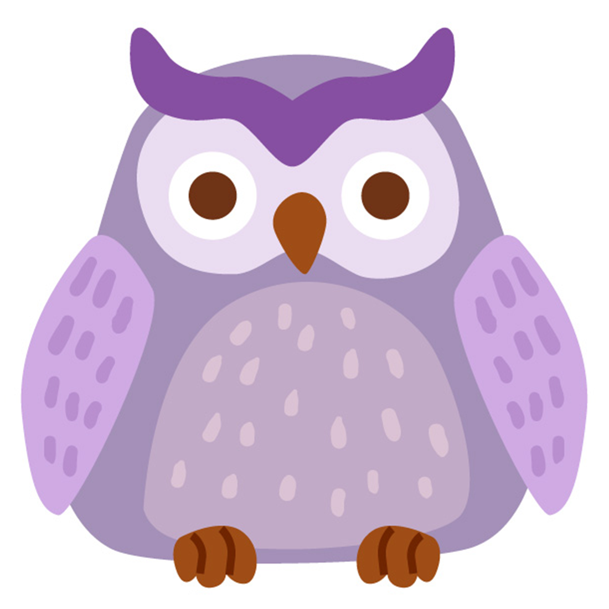

Owl
Owls are magnificient birds of the Strigiformes order,all connected with peculiar traits. They are usually solitary and nocturnal,with large eyes that lend to glow at night. Owls have very flexible necks, more then that humans.
Owls are magnificient birds of the Strigiformes order,all connected with peculiar traits. They are usually solitary and nocturnal,with large eyes that lend to glow at night. Owls have very flexible necks, more then that humans.